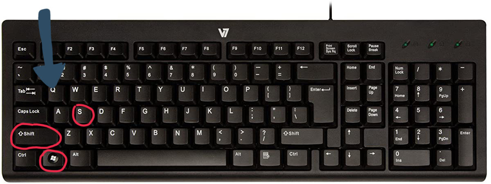

In the past, you'd have to open an app to start the process of taking a screenshot of just a portion of the screen. Now it's much easier. On your keyboard, press down on the Shift key, Windows key, and S key all at once. (On a standard keyboard, these will be located at the bottom left.)
Once you do this there will be a yellow border around your screen for a second and a horizontal taskbar will show up at the top center of your screen.
After you hit the three keys, your cursor will turn into a cross. At this point, you can choose what portion of the window to screenshot. Hold down the left mouse button to create a box around the area that you want to screenshot.
Once you let go of the left mouse button, the Snip & Sketch tool will pop up a window to the bottom right. It is going to show a preview of the screenshot you have taken. Click on this pop-up to open the application.

In the Snip & Sketch app, either hit Ctrl-S, or hit the floppy disk icon at the top left to save your image. It will give the option of jpg, png, or gif. Give your screenshot a name and save to whichever folder you would like.